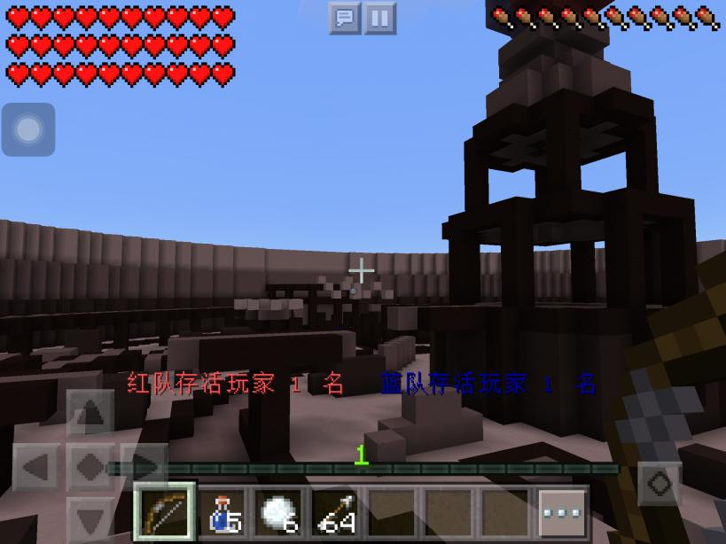

暮光之魂-插件介绍
彩蛋射击介绍KPaintBall - 彩蛋射击
插件介绍:
本游戏分成两队, 彩蛋红队以及彩蛋蓝队
玩家在游戏开始有拥有一个彩蛋枪以及三个水瓶 [VIP有五个水瓶]
玩家长按彩蛋枪即可发射彩蛋
当玩家给敌军玩家的彩蛋砸到 3 次的话, 玩家将会死亡
玩家死亡后, 需要同一队的未死亡的玩家站在死亡的玩家附近轻按水瓶
这样, 6 格内的同队玩家 (包括你) 都会获得重生
当哪个队没有任何生存的玩家及失败!
特殊武器:
玩家在等待游戏开始时长按钻石剑可打开商店
玩家需要点击 2 次不同种类的彩蛋枪来设置武器
一共有三种彩蛋枪
默认免费的 - 步枪 - 距离中等, 一次一发彩蛋
需要购买的 - 滑膛枪 - 短距离, 一次四发彩蛋
需要购买的 - 机关枪 - 长距离, 一次两发彩蛋
需要购买的 - 狙击枪 - 中距离, 一次即可秒杀
=-=-:辅助物品:-=-=
水瓶 (普通玩家 3瓶, VIP 5瓶) - 在死掉的队友前长按即可挽救!
雪球 (VIP 6个, 普通玩家没有) - 长按雪球可以连发, 瞄准三发必死
图片
